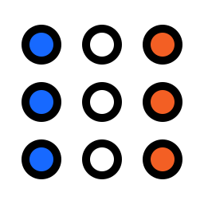
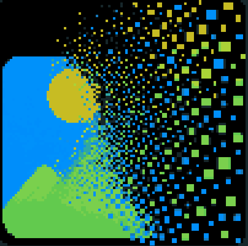

My Journey
M.Tech · Data Science & AI · IIT Madras
I'm a Computer Science Engineer currently pursuing an M.Tech in Data Science and Artificial Intelligence at IIT Madras. I enjoy building intelligent systems that solve real-world problems, with a primary interest in Computer Vision, Deep Learning, and Artificial Intelligence.
My journey into AI started with image processing and machine learning projects, and gradually evolved into developing deep learning models for vision applications. I enjoy understanding not only how a model works but also why it works — by exploring the underlying mathematics, optimization techniques, and implementation details.
Education
Experience
- Built an end-to-end Agentic AI platform with multi-agent workflows (LangGraph) and RAG-enabled LLM pipelines (LangChain) for AI Discovery and Smart Fill.
- Integrated AI services with Databricks, backend APIs, and databases; implemented REST APIs for deploying production-ready GenAI features.
- Used LangSmith for observability, tracing, and evaluation; optimized performance through prompt engineering and context management.
- Deployed and evaluated computer vision models for edge hardware, focusing on real-time inference performance.
- Experimented with modern object detection and face detection architectures to benchmark accuracy and speed on constrained devices.
- Integrated AI models on specialized hardware and streamlined inference workflows to reduce latency.
Technical Skills
- Computer Vision

Deep Learning- Machine Learning

Image Processing- Competitive Programming
- Linux Development
- Model Optimization for Edge Devices
Research Interests
- Large Language Models (LLMs)
- Natural Language Processing (NLP)
- Generative AI
- Edge AI & Model Deployment
- Efficient Inference & Model Compression
- AI Agents & RAG Systems
Tech Stack
- Python
- C++
- C
- PyTorch
- TensorFlow
- OpenCV
- scikit-learn
- HuggingFace
- LangChain
- ONNX
- NumPy
- Git
- Linux
- Docker
- Jupyter
Currently Learning
Continuously expanding my knowledge in modern AI technologies, especially:
I enjoy implementing research papers from scratch to better understand the ideas behind them.
Beyond Coding
Outside of programming, I enjoy:
I believe the best way to learn is by building, experimenting, and continuously improving.
Let's Connect
I'm always interested in discussing:
Feel free to explore my projects, and if something interests you, don't hesitate to reach out.